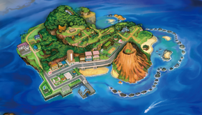
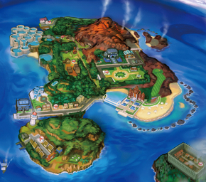
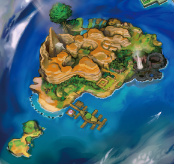
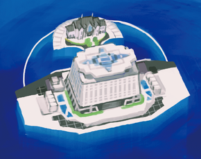

Islands
Alola is made up of four natural islands and one artificial island!
Melemele Island
Melemele island is located in the northwestern part of Alola. Melemele's guardian Pokemon is Tapu Koko. Some places of interest include:
... And more!
Akala Island
Akala island is the largest island in Alola! Akala's guardian Pokemon is Tapu Lele. Some places of interest include:
Ula'ula Island

Ula'ula island is the island with the most diverse biomes! Ula'ula's guardian Pokemon is Tapu Bulu. Some places of interest include:
Poni Island
Poni island is the smallest of Alola's natural islands! Poni's guardian Pokemon is Tapu Fini. Some places of interest include:
Aether Paradise
Aether Paradise is a man-made VLFS (Very Large Floating Structure) created by the Aether Foundation to protect wild Pokemon!